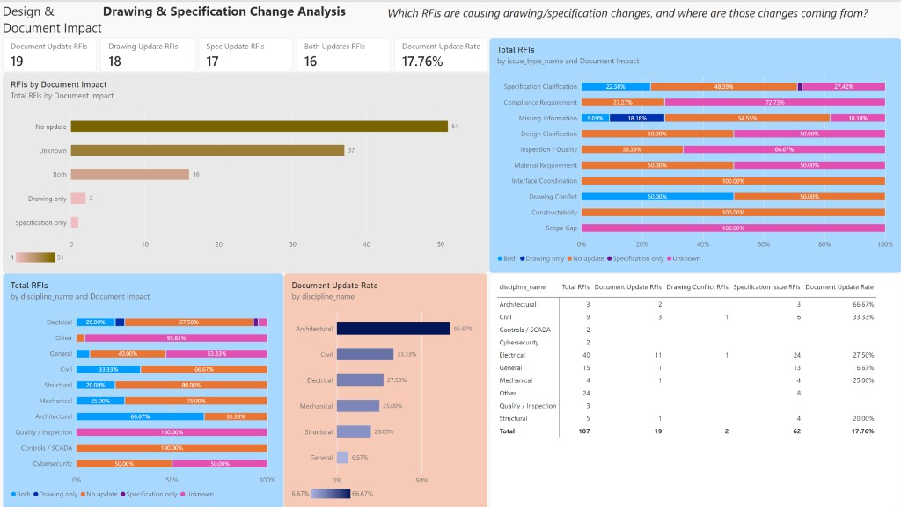

Section 1The page
The page title is Design & Document Impact. The question on the header is which RFIs are causing drawing or specification changes, and where those changes come from. The counts are the unfiltered page, and they match the 107 rows in data/processed/powerbi.

Five cards run across the top. The category bar and the issue-type stack sit under them. Discipline mix, update rate, and a discipline matrix fill the bottom.
Section 2KPI cards
| Card | Value | Meaning |
|---|---|---|
| Document Update RFIs | 19 | Drawing, specification, or both |
| Drawing Update RFIs | 18 | Drawing flag is Yes |
| Spec Update RFIs | 17 | Specification flag is Yes |
| Both Updates RFIs | 16 | Counted in both of the cards above |
| Document Update Rate | 17.76% | 19 divided by 107 |
Drawing Update 18 and Spec Update 17 are not a split of the 19. Sixteen RFIs sit in both cards. The remaining three are two drawing-only RFIs and one specification-only RFI: 16 + 2 + 1 = 19, and 16 + 2 = 18, and 16 + 1 = 17.
Section 3Five categories
RFIs by Document Impact is the same five slices as the donut on the Executive Overview, drawn as bars.
| Category | RFIs | Share |
|---|---|---|
| No update | 51 | 47.66% |
| Unknown | 37 | 34.58% |
| Both | 16 | 14.95% |
| Drawing only | 2 | 1.87% |
| Specification only | 1 | 0.93% |
Of the 19 updates, 16 change both documents. That is 84% of the RFIs that record an update. Unknown stays its own category. It is 37 of 107 RFIs, and it is concentrated: Other has 23 of 24 Unknown, General has 8 of 15, Quality / Inspection has 3 of 3, Compliance Requirement has 8 of 11, and Inspection / Quality has 4 of 6.
Section 4Issue type
The issue-type chart is a 100% stack. Specification Clarification is 62 RFIs. Fourteen of them are Both (22.58%), one is specification only, 30 are No update (48.39%), and 17 are Unknown (27.42%). Those 14 Both rows are most of the 16 combined updates on the page.
Missing Information has the two drawing-only RFIs, plus one Both. Drawing Conflict is two RFIs: RFI-002 is Both and Electrical, and RFI-101 is No update and Civil. Compliance Requirement is 72.73% Unknown. Interface Coordination and Constructability are entirely No update. Scope Gap, the single RFI RFI-096, is Unknown.
Section 5Discipline
The discipline stack and the rate chart answer two different questions. Electrical has the most updates, 11 of 40, a rate of 27.50%. Those 11 are 8 Both, both of the drawing-only RFIs, and the one specification-only RFI. Architectural has the highest rate, 2 of 3, which is 66.67%, on a set of three RFIs. Civil is 3 of 9, 33.33%.
The rate chart shows the disciplines with a confirmed update, from Architectural at 66.67% down to General at 6.67%. Controls / SCADA, Cybersecurity, Other, and Quality / Inspection have a rate of 0 on the matrix. Other is 24 RFIs with no confirmed update and 23 Unknown, so that zero is not a finding that nothing changed.
The matrix column Specification Issue RFIs is the count of issue type Specification Clarification. It is not the Spec Update card. The column totals 62. Drawing Conflict RFIs totals 2, one Civil and one Electrical.
| Discipline | RFIs | Document updates | Drawing conflict | Specification clarification | Update rate |
|---|---|---|---|---|---|
| Architectural | 3 | 2 | 0 | 3 | 66.67% |
| Civil | 9 | 3 | 1 | 6 | 33.33% |
| Controls / SCADA | 2 | 0 | 0 | 0 | 0.00% |
| Cybersecurity | 2 | 0 | 0 | 0 | 0.00% |
| Electrical | 40 | 11 | 1 | 24 | 27.50% |
| General | 15 | 1 | 0 | 13 | 6.67% |
| Mechanical | 4 | 1 | 0 | 4 | 25.00% |
| Other | 24 | 0 | 0 | 8 | 0.00% |
| Quality / Inspection | 3 | 0 | 0 | 0 | 0.00% |
| Structural | 5 | 1 | 0 | 4 | 20.00% |
| Total | 107 | 19 | 2 | 62 | 17.76% |
Section 6How to read it
Nineteen of 107 RFIs record a document update, and 16 of those 19 change both the drawing and the specification. Electrical carries 11 of the 19. Architectural’s 66.67% rate is 2 RFIs out of 3. Specification Clarification is both the largest issue type and the source of 15 of the 19 updates.
The 37 Unknown rows are a gap in the notes, not a No. Other, General, Quality / Inspection, and Compliance Requirement hold most of that gap. The next page separates submitters from the parties tasked to answer. The register and a single-RFI view are not on this page.